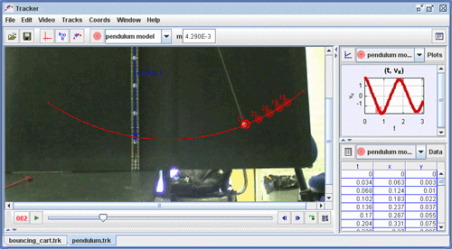

Here a pendulum model is built using polar coordinates since the motion is along a circular arc (constant r). In a polar model, forces and motion variables are defined for radial (r) and tangential (theta) axes rather than x and y.
